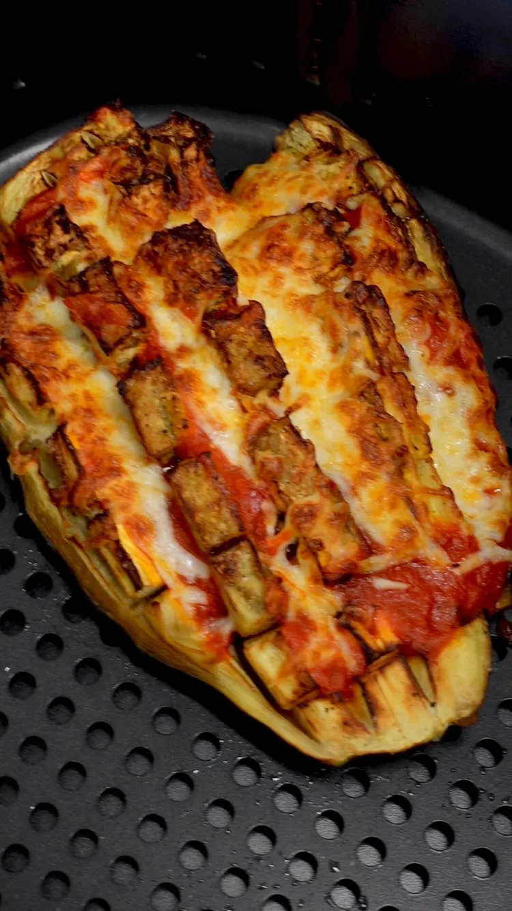

Inside-Out Air-Fried Eggplant Parm

Gooey, rich, flavorful, and indulgent, this eggplant is super tender, especially around the edges. Marinara sauce and cheese are the perfect rich complements to hide any slight bitterness left behind from the eggplant.
Great served with a spicy jarred marinara like arrabiata sauce. Add ground beef or chicken if desired!
Ingredients:
- medium eggplant, halved lengthwise
- 4 tablespoons olive oil, divided
- 1 pinch kosher salt, divided
- ½ teaspoon ground black pepper, divided
- 1 cup marinara sauce
- 1 cup shredded mozzarella cheese
- 2 tablespoons grated Parmesan cheese
- 1 teaspoon chopped fresh basil
Directions:
- Score eggplant all the way through the flesh lengthwise, being careful not to cut through the skin. Score again widthwise to create cubes. Gently turn the eggplant inside out. Repeat with second half. If eggplant breaks, manipulate the outer edges to stand up or use a long skewer to hold it open.
- Drizzle both halves with 2 tablespoons oil, 1/2 teaspoon salt, and 1/4 teaspoon pepper. Place in an air fryer basket.
- Air-fry at 390 to 400 degrees F for 10 minutes.
- Open the air fryer and top each eggplant with marinara sauce, mozzarella cheese, and Parmesan cheese, trying to fill each groove. Air-fry 5 minutes longer.
- Serve immediately sprinkled with fresh basil.
Home